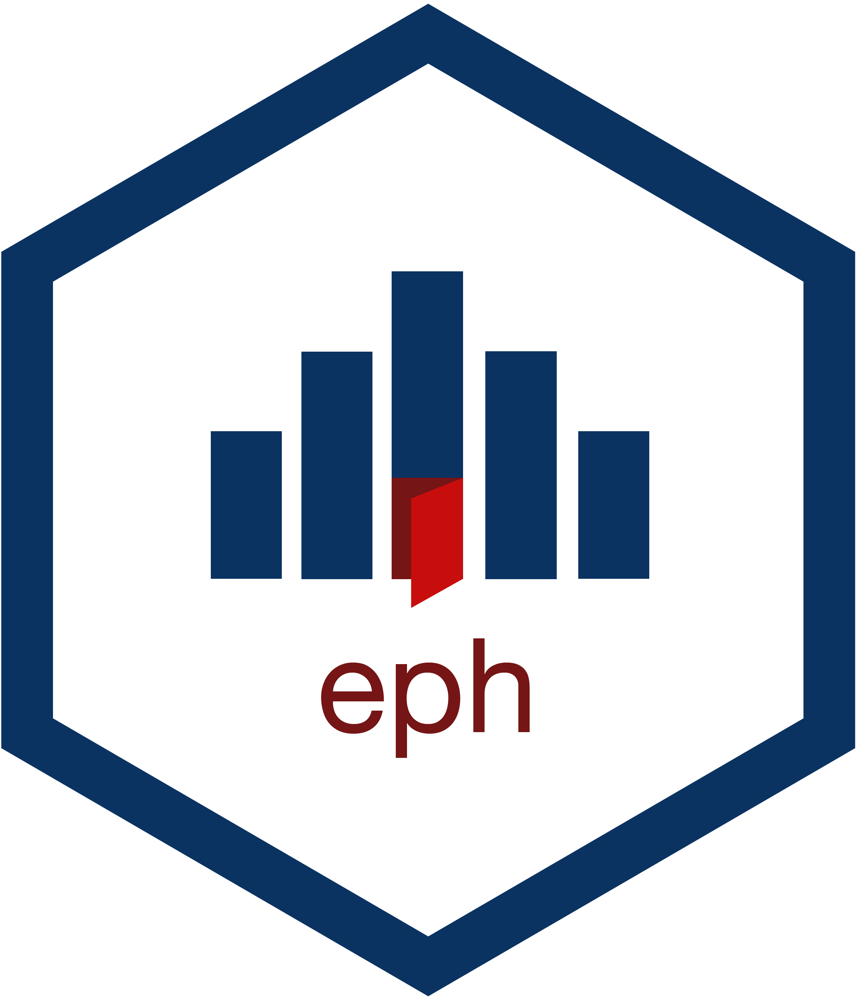

Índice del paquete
Descarga y recodificación
Funciones para descargar los datos de la encuesta y recodificar sus variables.
-
get_microdata() - Descarga de Bases de EPH
-
organize_caes() - Clasificador de Actividades
-
organize_cno() - Clasificador de Ocupaciones
-
organize_labels() - Funcion para etiquetar las bases de la Encuesta Permanente de Hogares.
-
organize_panels() - Pool de Datos en Panel - Base Individudal EPH continua
-
get_total_urbano() - Descarga de Bases de EPH total urbano
-
get_eahu() - Descarga de Bases de la Encuesta anual de hogares urbanos
-
get_poverty_lines() - Descarga de canasta basica alimentaria y canasta basica total
-
adulto_equivalente - Tabla de valores de adulto equivalente segun sexo y edad
-
diccionario_aglomerados - Diccionario de aglomerados segun diseno de registro de la EPH
-
diccionario_regiones - Diccionario de regiones segun diseno de registro de la EPH
-
errores_muestrales - Tabla con los errores muestrales para estimaciones de poblacion
-
CNO - Categorias de las 4 dimensiones del Clasificador Nacional de Ocupaciones 2001.
-
caes - Categorias del Clasificador de Actividades Economicas para encuestas Sociodemograficas
-
centroides_aglomerados - Tabla de centroides de los aglomerados
Procesamiento
Funciones para facilitar procesamientos básicos de la base de datos (incluyendo mapeo)
-
calculate_errors() - Calculo del desvio estandar y el coeficiente de variacion
-
calculate_poverty() - Calculo de Pobreza e Indigencia
-
calculate_tabulates() - Tabulado con ponderacion
-
map_agglomerates() - Mapa de indicadores por aglomerado
-
toybase_hogar_2016_04 - Seleccion aleatoria de casos de la base 2016 trimestre 4 para la base hogar
-
toybase_individual_2016_03 - Seleccion aleatoria de casos de la base 2016 trimestre 3 para la base individual
-
toybase_individual_2016_04 - Seleccion aleatoria de casos de la base 2016 trimestre 4 para la base individual
-
canastas_reg_example - Canastas Basicas Alimentarias y Canastas Basicas Totales segun region y trimestre